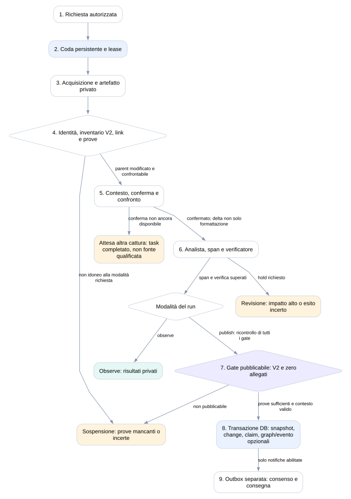
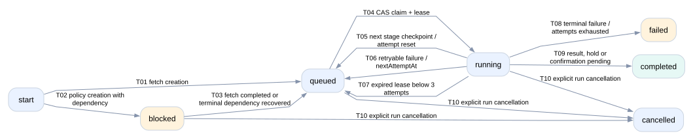
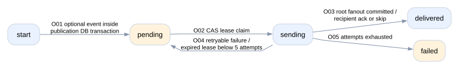
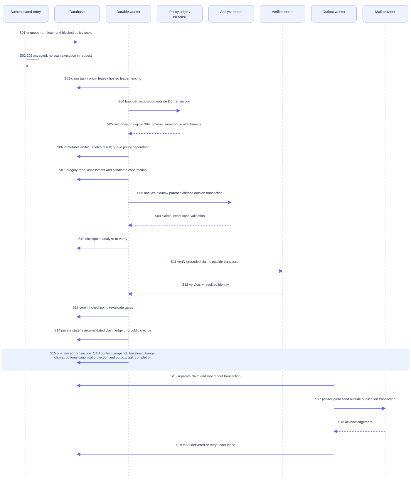
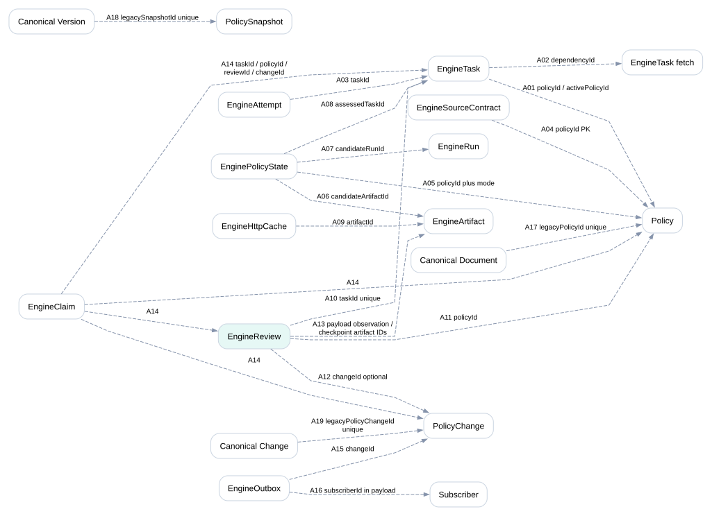

Research audit · 22 November 2026
PolicyWatcher workflow research atlas
Follow a policy from acquisition to evidence review and a publication decision. Seven source-traced diagrams describe the candidate implementation, with corrected findings and qualification limits.
3eabf9d8b420efb13debfcd8b6e378e81a2c4c61Open the original interactive atlas — Italian
The complete interactive original is in Italian. The seven detailed diagrams below retain their reviewed English labels; their editable sources and supporting receipts are included.
Original overview — Italian
This compact overview retains its original Italian labels. It is an explanatory diagram, not a measured performance chart.



Seven diagrams
1. From source to decision
Authorized entry, durable work, acquisition and reference checks are separate from the final decision. Active base URI and final URL determine the link census; ambiguity holds the case.

2. Work states
Stage and status are different. A completed task can contain a review hold or confirmation pending, so processing completion does not qualify a source.


3. Review and rebaseline
Manual review cannot waive missing evidence. Rebaseline requests use the same publication gate; terminal details show one effective observation while preserving the original payload.

4. Events and notifications
Fanout, recipient consent, send attempts and retries are distinct. A delivered work item is not proof of inbox receipt; SMTP is not exactly once.


5. Sequence and atomic boundaries
Network and model calls are outside the publication transaction. Enabled canonical projection and optional outbox writes share that same transaction; notification delivery follows separately.


6. Declared schema relationships
Selected relationships declared in Prisma, not all tables or all database constraints in production. Canonical rows are projected only when the corresponding dual-write feature is enabled.

7. Application evidence references
Dashed edges identify scalar and JSON application references. They are deliberately separate from declared database foreign keys.


28 verification gates
The gate conditions below preserve the verified English wording from the source model. They describe implemented checks, not a certification or current production state.
| Gate | Branch | Condition and limit | Code reference |
|---|---|---|---|
| Entry authorization | scheduler / admin | valid Bearer or admin-role session; hosted scheduler refused | `api/cron/check-all/route.ts:1581-1593`; `api/admin/engine/route.ts:16-20,63-77` |
| Hosted Preview isolation | enqueue / worker | preview/compare channel, observe, silent, limit ≤50; exact implementation context | `store.ts:34-46`; `pipeline.ts:304-308`; `scanChannels.ts:87-100` |
| Pause / publication flags | enqueue, claim, manual approval | Process-start flags with no live setter: checked at entry/claim and manual approval; hosted fenced writes reassert context and leader lease. Not an instantaneous global kill switch. | src/lib/engine/store.ts:40,151-155,198-217; src/lib/engine/pipeline.ts:304-308,386-388,415-417; src/lib/engine/hostedWorker.ts:65-69,94-103 |
| Stable/Preview exclusion | enqueue | when experimental channels are enabled, stable active lease blocks Engine run and vice versa | `store.ts:63-66`; `api/cron/check-all/route.ts:125-129` |
| Durable lease fencing | claim / writes | CAS token, generation, unexpired task lease; hosted leader asserted in same DB transaction | `store.ts:163-185,198-223`; `hostedWorker.ts:91-116` |
| Origin pacing | fetch | origin cooldown and origin lease; serial same-origin attachment requests within held fetch lease, with one reservation budget shared by all root fallbacks | `store.ts:156-177,253-255`; `acquisition.ts:348-394` |
| Contract identity | acquisition | exact source URL and language; required title/headings/terminal/size bounds | `acquisition.ts:238-239`; `document.ts:131-149` |
| Transport / drift | retrieval | transport helper acceptance, no source drift; 429/503 backoff; configured renderer only | `acquisition.ts:252-284` |
| Conditional 304 | unchanged only | cached matching baseline/profile, direct/exact URL, cache eligibility; no attachments | `acquisition.ts:240-282`; `pipeline.ts:158-173` |
| Private artifact integrity | artifact read | digest(bodyJson)=ID and byteCount matches; max12 MB on write | `store.ts:234-245` |
| V2 reference coverage | capture and publish | source/language/group counts/order; independently declared V2 elements/link census; candidate ID not reference ID | `coverage.ts:171-204,272-292` |
| Active base and document location | link census / attachment planning | one active XHTML base resolved against actual response finalUrl, otherwise default finalUrl; unsafe or ambiguous base holds without fetching attachments; inert template bases/anchors excluded | `acquisition.ts:216,223,288,315-345` |
| Failure diagnostics | root/attachment transport | whitelisted codes, integer status 0–599, enum/length-validated proof rebuilt without extra properties or raw exception text | `acquisition.ts:258-260,386-424` |
| Reservation budget | all root fallbacks in one acquire | reserve ≤1 MB before request from 2 MB total, retain failed reservations, refund successful unused allowance, reuse request promises; this bounds admitted decoded output, not total wire traffic | `acquisition.ts:249-251,348-394`; `scraper.ts:601-615,750-751,822` |
| Terminal review readability | authenticated admin GET / UI | Direct payload or checkpoint observation selected into separate DTO; same timestamp/source/HTTP rendered, original stored payload unchanged | src/app/api/admin/engine/route.ts:26-41; src/app/admin/engine/page.tsx:15-16,120,180-183 |
| Reference provenance limit | all coverage | referenceOriginVerified=false and sourceCompletenessQualified=false even on match | `coverage.ts:176,275-276` |
| Attachment capture | observe only | exact links/status/final URL/media; complete origin framing; original entity bytes and reviewed extraction; shared 2 MB decoded-output reservation per acquire, ≤1 MB per file, at most 4 manifest entries; failed reads retain reservation, successful small reads refund unused allowance; in-run promises reused; no redirect targets | `acquisition.ts:348-394`; `coverage.ts:294-317` |
| Attachment publication hold | all publish / approval paths | expectedAttachments must equal zero regardless of a matching inventory | `coverage.ts:199-204`; `pipeline.ts:36-38,153-155,268-269,345-347,398-400,427-428,457-458` |
| Current context | authoritative write | current policy baseline/scope, contract hash, extractor profile and CAS lock unchanged | `pipeline.ts:54-72` |
| Confirmation | initial/changed baseline | fresh response, same hash/profile, distinct run, 1 hour≤spacing≤7 days | `pipeline.ts:173,215-235`; constants `store.ts:12-13` |
| Parser-profile replay | changed text / old profile | retained old input hash valid, re-extract and require explicit baseline review; unsafe replay requires new confirmed rebaseline | `pipeline.ts:174-190,386-412,452-484` |
| Claim grounding | analyze and commit | schema, exact UTF-16 spans, old/new support, complete delta coverage and table context | `claims.ts:27-87`; `pipeline.ts:327-343` |
| Verifier independence | commit / approval | structurally complete supported verdicts; distinct resolved model identities; correlated model errors still possible | `claims.ts:90-113`; `pipeline.ts:339-343,429-432` |
| High-impact / freshness | commit / review | sensitive/high impact needs human review; candidate evidence ≤48 hours | `claims.ts:83-86`; `pipeline.ts:341-343,429-432` |
| Manual approval scope | review | only impact-only or explicit parser/formatting review; missing hard evidence cannot be waived; current context rechecked | `pipeline.ts:415-484` |
| Atomic publication | commit / eligible manual approve | baseline+snapshot+change+claims+optional outbox in one DB transaction; canonical projection participates in the same transaction only when dual-write is enabled, otherwise helper returns null | src/lib/engine/pipeline.ts:268-295,348-359,433-449; src/lib/documentEvidenceSync.ts:50-54,400-408,485-491 |
| Notification eligibility | separate outbox | notifications flag, public published change; confirmed active INSTANT subscriber and preferences rechecked at send | `outbox.ts:10-11,25-33,46-58` |
| Notification retries | separate outbox | leased CAS, max5 attempts, stable Message-ID; DB fanout dedup, no exactly-once SMTP guarantee | `outbox.ts:13-23,39-41,49-62` |
Audit and downloadable evidence
Counts refer to controlled tests, not policies acquired. Model opinions were adjudicated against code and negative controls; the models did not execute the tests.
- 1 P1 and 4 P2 corrected
- 1,865 tests passed; 14 skipped
- 5 negative controls failed as expected
- 4 free cloud calls: verified cost 0 USD
- Static source and controlled offline evidence; no pentest
Original supporting reports are in Italian or their source language; they are labelled rather than presented as translated reports.
The ZIP contains the documentation and evidence once, without recursively embedding itself. Its own download link is available in the hosted folder; extracted copies can use every individual asset.
Read the boundaries
Reference independence remains reviewer-attested. Attachments stay observation-only even when inventory coverage matches. General source completeness, attachment-only semantic analysis and 500 successful full-pipeline policies per day remain unqualified. Canonical projection is optional when dual-write is enabled and participates in the same database transaction. SMTP is not exactly-once delivery.